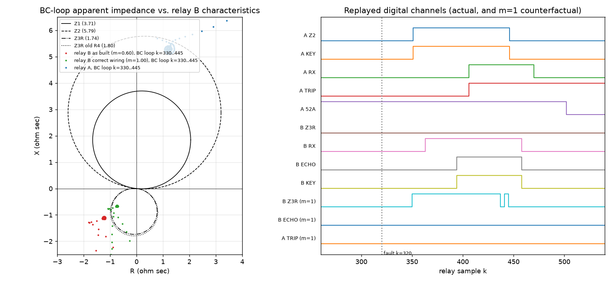

Protection engineering investigation report. Case file L1_trip_case_r3_2026-09-14. All numbers in this report are outputs of the replay program l1_trip_replay.py (console log replay_console_log.txt, values in l1_trip_results.json). Relay sample k = n − 1 (n = first column of the .dat files); time = 14:22:07.3450 + k/1920 s, printed truncated to 0.1 ms as in the relays' SER.
The program implements the manual literally and evaluates every sample in the specified order: (1) full-cycle Fourier phasor X(k) = (√2/32)·Σ x[k−i]·e−j2π(k−i)/32 for k ≥ 31; (2) loops AB, BC, CA with V = VX − VY, I = IX − IY, evaluated only for |I| ≥ 50PP, Z = V/I; forward mho |Z − (R/2)ejT| ≤ R/2 for Z1/Z2, reverse mho |Z + (R/2)ejT| ≤ R/2 for Z3R; (3) RX(k) = remote KEY(k − 12); (4) echo: AND(/Z1, /Z2, /Z3R, /EBLK, RX) → EDPU pickup (asserts on the 32nd consecutive sample) → EDUR one-shot (64 samples, not retriggerable), EBLK = dropout timer holding 64 samples after Z3R drops; (5) KEY = Z2 + ECHO (ECHO only when ECHO = Y); (6) TRIP = latch(Z1 + Z2·RX); 52A opens 96 samples after TRIP; fault locator d = Xprimary/0.48 at the trip sample. The two ends of a line are simulated in lock step so that the channel couples them.
| Relay replayed | Inputs | Recorded digital channels (Z1, Z2, KEY, RX, TRIP, 52A), 640 samples | SER entries reproduced to 0.1 ms |
|---|---|---|---|
| L2-21 Sub B and L2-21 Sub C (lock step) | own records | 0 mismatching samples on every channel | 10/10 and 8/8 transitions (+ 52A closed at record start) |
| L1-21 relay A (lock step with replayed relay B) | own record | 0 mismatching samples on every channel, including RX, which is generated by the replayed relay B | 8/8 transitions (+ 52A closed at record start); fault locator 92.0 km BC (report: 92.0 km BC) |
| L1-21 relay B | reconstructed, m = 0.60 | no oscillography exists | 6/6 (RX, ECHO and KEY assert and deassert); Z1, Z2, Z3R and TRIP never assert, as in the SER |
The implementation reproduces all three recorded relays sample for sample. The reconstructed relay B reproduces its SER exactly, and its replayed ECHO, delayed by the channel, reproduces relay A's recorded RX channel sample for sample.
| Quantity | Result | Evidence |
|---|---|---|
| Fault type | Phase-to-phase B–C, no ground | Only VB/VC and IB/IC change; 3I0 = 0.000 A at all three terminals; phase A current and voltage unchanged during the fault (relay A: IA 1.479 A before and during; Sub B VA 66.44 V). Patrol: phase-to-phase flashover B–C at tower 18, bird nest, no ground contact. |
| Faulted line | L2 (Substation B – Substation C) | L2 relays: B zone 1, C POTT; patrol findings on L2; L1 impedance check consistent with no L1 fault; L1 restored with no fault found. |
| Distance from Substation B | 6.48 km (two-ended, BC loop, mean over k = 370–429; spread 6.20–6.80 km) | Patrol: tower 18 at 6.50 km. Single-ended reactance at B L2-21: 6.20 km (affected by remote infeed and fault resistance). |
| Fault resistance | 3.00 Ω primary phase to phase (arc) | From the two-ended solution. |
| Fault inception | Relay sample k = 320 (record line n = 321), 14:22:07.5116 | First one-cycle superimposed change of VB and VC at k = 320 in all three records (currents follow at k = 321); equal to the COMTRADE trigger 14:22:07.511667. |
The Sub B infeed (transformer T1 from the 115 kV network) makes the L2 current at B 2.06 times the L1 current (angle −5.0°). That infeed is why relay A's zone 2 measured the fault at 91.8–92.0 km instead of 86.5 km. Relay A's zone 2 is designed to overreach, so its pickup was expected.
| k | Time 14:22: | Event |
|---|---|---|
| 320 | 07.5116 | B–C fault on L2, 6.48 km from B |
| 338 / 340 | 07.5210 / 07.5220 | L2-21 B: Z2 + KEY / Z1 + TRIP |
| 347 / 350 | 07.5257 / 07.5272 | L2-21 C: Z2 + KEY / RX + TRIP (POTT) |
| 351 | 07.5278 | Relay A: Z2 asserts (forward, overreaching), KEY sent to B |
| 363 | 07.5340 | Relay B: RX. Its BC-loop impedance lies outside Z3R, so Z3R and EBLK stay deasserted; Z1 and Z2 are deasserted (reverse fault). The echo AND gate is satisfied. |
| 394 | 07.5502 | Relay B: EDPU expires (32nd consecutive sample), ECHO and KEY assert for 64 samples |
| 406 | 07.5564 | Relay A: RX (B's echo + 12 samples) with Z2 still asserted, so TRIP (POTT); locator 92.0 km, BC |
| 436 / 446 | 07.5720 / 07.5772 | L2 breakers open at B / C, fault cleared; relay A Z2 and KEY drop at 446 |
| 458 / 470 | 07.5835 / 07.5897 | Relay B ECHO/KEY/RX drop / relay A RX drops |
| 502 | 07.6064 | L1 breaker at A opens (TRIP + 96 samples) |
| Relay | Z1 | Z2 | Z3R | RX | ECHO | KEY | TRIP | 52A opens |
|---|---|---|---|---|---|---|---|---|
| A (Sub A) | never | 351 | disabled (Z3P = OFF) | 406 | disabled (ECHO = N) | 351 | 406 | 502 |
| B (Sub B), as built | never | never | never | 363 | 394 | 394 | never | stays closed |
Relay A behaved exactly as set. Its zone 2 (5.79 Ω sec = 125 % of L1) overreaches into L2 by design and asserted at k = 351 (Z = 1.33 + j5.50 Ω sec at pickup). It received a permissive at k = 406 and tripped by POTT. The permissive was relay B's echo, so relay A's trip is a consequence and not a cause.
For a fault behind Substation B, relay B must assert Z3R (reverse) and block the echo. With the as-built CT circuit, relay B's BC-loop impedance during the fault averaged −1.225 − j1.124 Ω sec (|Z| = 1.66 Ω at −137.5°). It is 1.163 Ω from the Z3R circle centre, against a radius of 0.870 Ω, so it lies outside the circle. Z3R never asserted, EBLK never started, the AND gate was satisfied from RX (k = 363), and ECHO followed at k = 394. With the true current (m = 1) the same impedance is −0.735 − j0.674 Ω sec, 0.672 Ω from the centre, inside Z3R. The angle (−137.5°, away from the 264° Z3R axis) comes from the 3.0 Ω fault resistance seen through the 2.06 infeed ratio. The 1/0.60 magnification is what pushes the point out of the circle. The figure below shows the trajectories.

With m = 0.60 every reach of relay B is effectively multiplied by 0.60: Z1 covers 48 % of L1 instead of 80 %, Z2 75 % instead of 125 % (no longer overreaching, so POTT keying from B fails for faults near A), and Z3R covers 0.90 times instead of 1.50 times relay A's zone 2 overreach beyond bus B. The BF-50 receives only 40 % of the current, so its 50BF pickup is effectively 2.5 times its setting.
| Hypothesis | Replay result | Verdict and evidence |
|---|---|---|
| Correct series wiring (m = 1.00), relays as set | B Z3R at 350, no echo, A no trip | Does not reproduce the event. The same settings and logic would not have produced the trip. |
| Fault on L1, or relay A misoperation | Relay A replay matches its record with 0 mismatches | Rejected. ZL1 computed from the A and B data equals the line data, so no current left L1; the patrol found the fault on L2; L1 was restored with no fault. Relay A operated per its logic on a received permissive. |
| Spurious RX at A (channel) | A's RX = B's replayed ECHO + 12 samples, exactly | Rejected. Relay B's SER shows ECHO and KEY, and the RX timing at A matches them to the sample. |
| CT polarity reversed at B (m = −1 or −0.6) | B Z2 at 339/343, B Z1 at 342/348, B TRIP; A trips at 351/355 | Rejected. Relay B's SER shows no Z1, Z2 or TRIP, and A tripped at 406, not 351. |
| Wrong CT tap at B, X1–X5 2000:5 (ratio error 1200/2000 = 0.60) | Same as the as-built case (identical factor) | Event data alone cannot separate it from the parallel BF-50, so the documents decide. The commissioning record of 2023-04-14 (52-L1 core 1: X2–X4, ratio PASS) and the as-built schedule rev C (CT52L1-A/B/C:X2 and X4 common) both show the 1200:5 tap. Rejected. |
| Open or shorted CT circuit at B (m = 0); Z3R disabled at B | Both reproduce the SER (the sweep shows any m ≤ 0.73 does) | No documentary support. The settings export shows Z3P = 1.74 active in group 1, and nothing records a shorted or open circuit. The documented parallel connection gives m = 0.60, inside the range that reproduces the event. The as-found on-load check in section 9 will confirm m directly. |
| Settings revision R5: Z3P recalculated 1.80 → 1.74 | With 1.80: still no Z3R (as built); Z3R at 350 (series) | Rejected as a cause: the old reach would also have failed. The smallest reach that would have contained the as-built impedance is 2.22 Ω. The calculation itself is sound for a correctly wired relay: Z3R reach is 1.50 times A's zone 2 overreach, and the event impedance is inside Z3R with m = 1. |
| Firmware v3.2 → v3.4 (SB-114, event storage) | Manual logic with the documented inputs reproduces the SER exactly | No firmware anomaly is needed to explain the event. The upgrade concerns event storage. |
| VT-B secondary MCB (replaced 2026-06-14) | – | Rejected. The Sub B bus voltages in the L2-21 record are healthy (VA 66.44 V), and L2-21 B, on the same VT, operated correctly (zone 1). |
| CT saturation at B | – | Rejected. Peak secondary fault current 9.51 A rms × 0.48 Ω series burden × (1 + X/R 9.6) needs 48 V, against 480 V (C800 on the 1200/2000 tap). Saturation also would not give the steady ratio that the replay requires. |
| Echo timers mis-set or channel delay | – | Rejected. The SER spacing is RX → ECHO 31 samples (EDPU 32), ECHO 64 samples (EDUR), and channel 12 samples, all as set. |
The CT circuit is correct (series), the settings are unchanged, and the analog data after k = 501 are continued as the steady pre-opening waveform because breaker A would have stayed closed.
| Relay | Z1 | Z2 | Z3R | RX | ECHO | KEY | TRIP |
|---|---|---|---|---|---|---|---|
| A | never | 351 (drops 446) | disabled | never | disabled | 351 (drops 446) | never |
| B | never | never | 350 | 363 | never | never | never |
Relay B's Z3R asserts 13 samples before the permissive arrives. Z3R and EBLK block the echo, relay A receives no permissive, and its zone 2 resets when L2 clears at k = 446. L1 stays in service: this is the correct, secure behaviour for an external fault. The program also replays this case on the unextended record, with the same result.